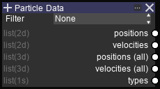
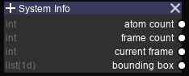

Input Nodes¶
Note
ACNT and FCNT refers to atom count and frame count respectively.
Particle Data¶
Options
- Filter (Dropdown multiple-select)
| Value | Description |
|---|---|
| None | Use data from all atoms |
| Visible | Only use data from visible atoms |
| Clipped | Only use data from atoms visible through clipping |
Output sockets
| Name | Type | Shape | Description |
|---|---|---|---|
| Positions | list(2d) | ACNT, 3 | Atom positions for current frame |
| Velocities | list(2d) | ACNT, 3 | Atom velocities for current frame |
| Positions (All) | list(3d) | FCNT, ACNT, 3 | Atom positions for all frames |
| Velocities (All) | list(3d) | FCNT, ACNT, 3 | Atom velocities for all frames |
System Info¶
Output sockets
| Name | Type | Shape | Description |
|---|---|---|---|
| Atom count | int | - | Total number of atoms |
| Frame count | int | - | Total number of frames |
| Current frame | int | - | Current visible frames |
| Bounding box | list(1d) | 6 | Simulation box coordinates, in the order of -X, +X, -Y, +Y, -Z, +Z |